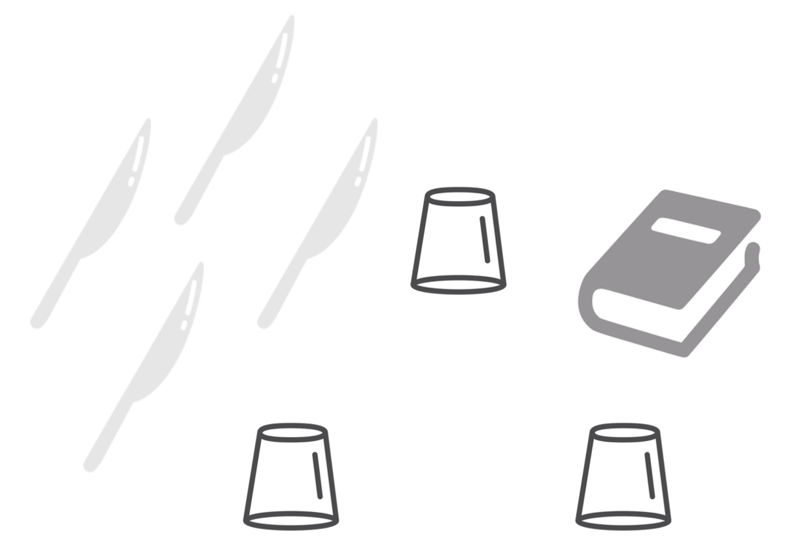
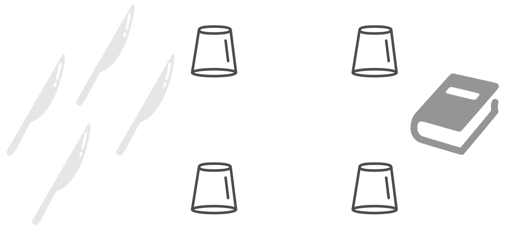

thinking
Think and Compute
Understanding how your thinking mechanisms work and training you in been flexible and reactive while thinking can be achieved only by thinking about something
Thus, let us do a couple of experiments!

Material:
3 glasses
4 knives
1 book
Setting:
the glasses as vertexes of a triangle of equal sides
the base of each glass is separated from the other by the lenght of a knife
Using the knives, creating a platform on top of the glasses
The knives used must not touch the ground
The platform must support the weight of the book
Approaching the solution may be difficult if there is no pattern provided by experience
It is important to analyse the situation to see if all the material available is useful, leaving out everything does not really help
Trial-and-error prodedure may be effective

Material:
4 glasses
4 knives
1 book
Setting:
the glasses at a corner of a square
the base of each glass is separated from the other by the lenght of a knife
Using the knives, creating a platform on top of the glasses
The knives used must not touch the ground
The platform must support the weight of the book
Recognising essential similarity of a problem to one already solved makes the problem easier to solve
Experience is much more valuable if some general principle is derived from it
Use of patterns provided by experience is the most rapid way of solving problems
Can you devise a general principle that can be use to solve both the situations introduced in the previous experiment?
These kinds of thinking exercises you performed today will characterise the entire course
Concepts such as abstraction, trial-and-error learning, prior experience, deriving general principles, practice, are key factors when learning a new language (including a new programming language)
Note: the two thinking experiments with glasses and knives introduced in this opening lecture come from the book The 5-Day Course in Thinking by Edward de Bono.